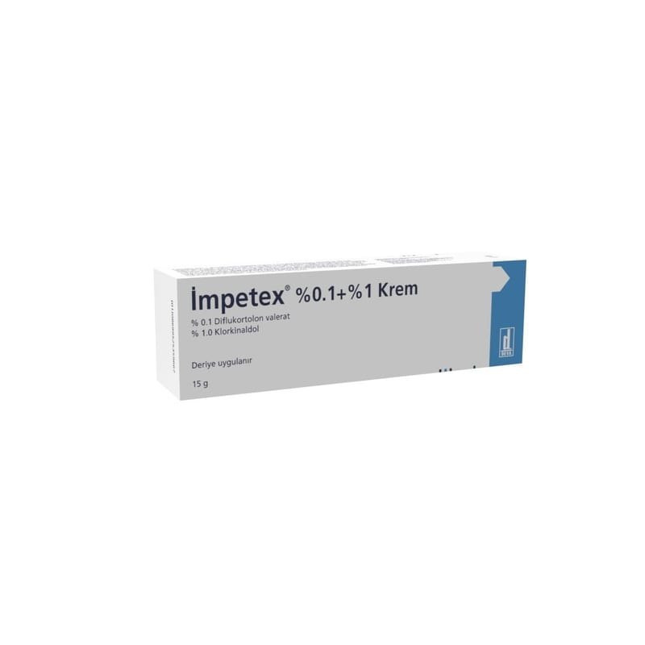

Impetex %0.1 + %1 Krem, 15 g

Ne için kullanılır
KT · Bölüm 1İMPETEX iltihap giderici bir madde olan bir kortikosteroidle mikroplara karşı etkili bir maddenin kombine edildiği ve deri üzerinde haricen kullanılan bir kremdir.
İMPETEX iltihabi ve alerjik deri reaksiyonlarını baskılar ve kızarıklık, cilt kalınlaşması, deri yüzeyinde tabaka oluşumu, su toplanması, kaşıntı ve diğer şikayetler (yanma hissi ya da sızı) gibi deri problemlerinden kaynaklanan semptomları azaltır. Ayrıca bakteriler, mayalar, mantarlar ve küflerin çoğalmalarını engeller (ör. Mikroorganizmalar).
İMPETEX iltihabi belirtilerin ağırlıklı olduğu bakteri veya mantar enfeksiyonlarının başlangıç ve idame tedavisi için kullanılır.
Bunlar: Bacaklarda madeni para şekillerinde allerjik nitelikte, yağlı (seboreik) ve el ve ayaklarda görülen kabartılı egzama, varislerle seyreden (variköz) egzama (fakat direk bacaklardaki
yaralar üzerine değil); bakteri enfeksiyonuna duyarlık nedeniyle oluşan kabarcıklar, iltihabi kabarcıklar, döküntülü, akıntılı egzama; İltihabi kabarcıklar (kıl kökleri iltihabı, iltihabi kabarcıklar) iltihabi kabuklaşma ve lekelenme gösteren deri hastalığı (eritrazma) Mantar enfeksiyonları (tinea, candidiaz, pitrazis versikolor)
İMPETEX yukarıda bahsedilen iltihabi ve alerjik deri hastalıklarının bakteriyel ve mantar enfeksiyonlarının önlenmesinde de kullanılır.